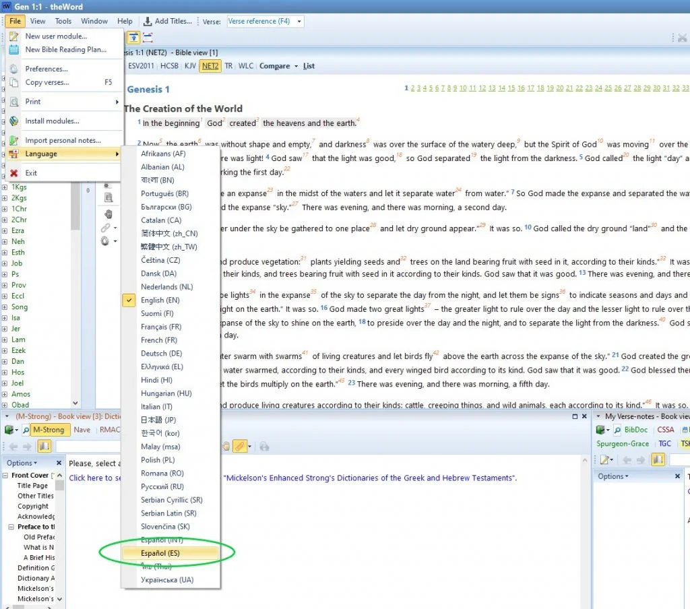
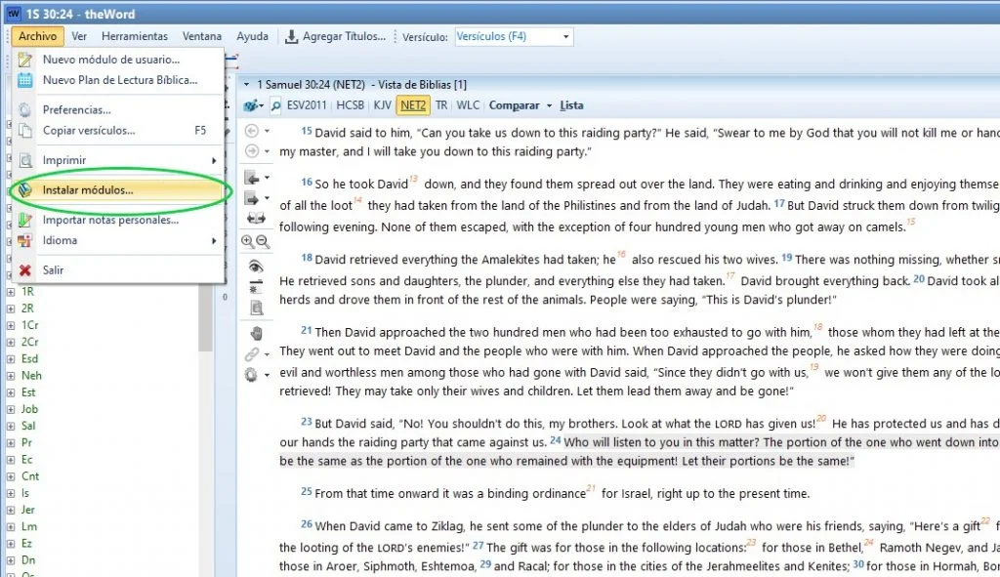
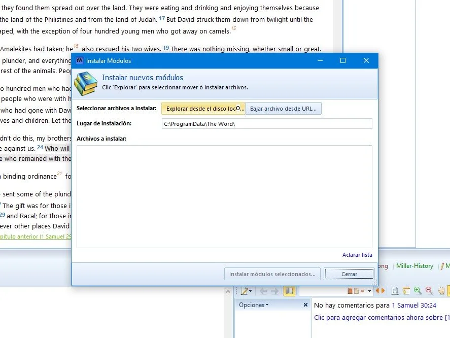
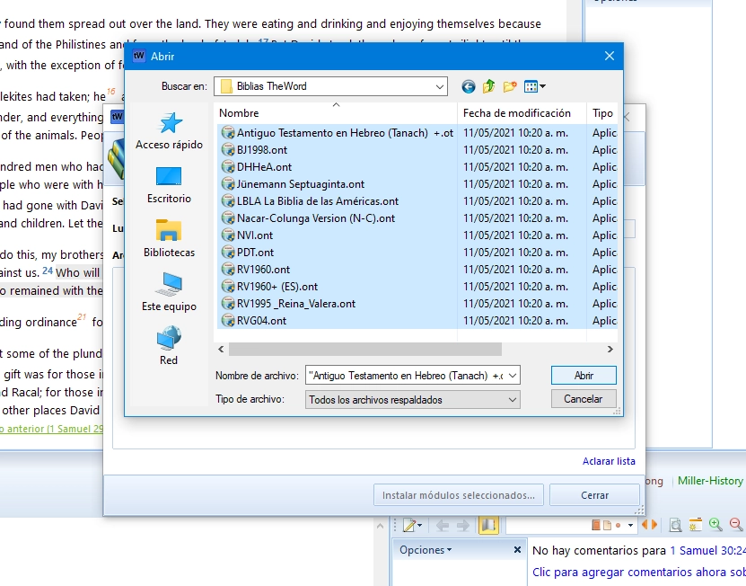
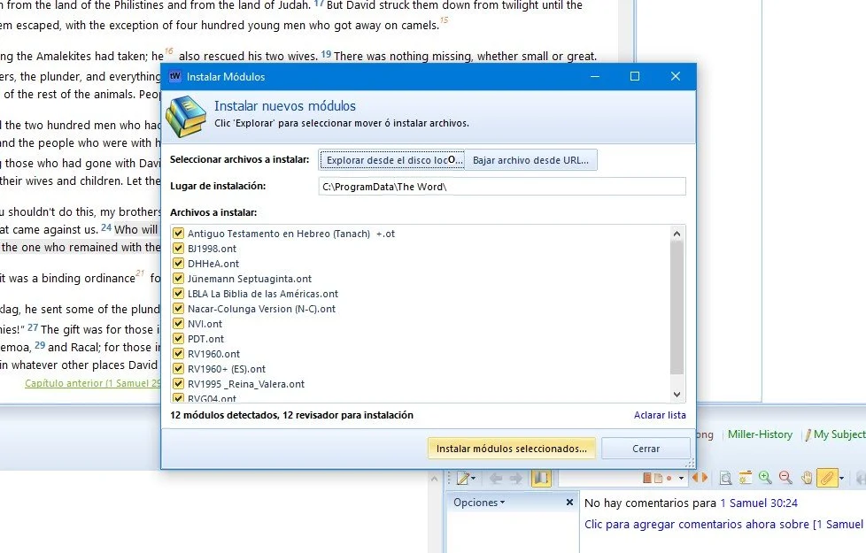

Programas | theWord

theWord fue creada para ser una herramienta valiosa y cotidiana para todo cristiano que desee leer y estudiar la Biblia, la Palabra de Dios. Creemos que theWord es uno de los mejores programas de software de estudio bíblico disponibles.
Aunque la etiqueta de precio de theWord es gratuita, su lista de características es similar a herramientas de pago.
Es rápido de cargar, fácil de personalizar e intuitivo de usar. Creemos que su valor y calidad no se pueden presentar en su totalidad a través de una lista de funciones, por lo que le recomendamos que lo pruebe. Cada pequeño detalle ha sido cuidadosamente contemplado, diseñado e implementado con muchas opciones y personalizaciones.
theWord consta del programa principal (motor) y una lista de módulos adicionales como Biblias, en diferentes idiomas, comentarios, diccionarios, libros, mapas, fuentes, diferentes archivos de traducción, etc.
theWord admite módulos complementarios en muchos idiomas y también admite muchos idiomas diferentes para su interfaz de usuario.
Lo que mas nos gusta de theWord, además de ser completamente gratuito es que es muy fácil de utilizar. Es un software muy liviano que carga rápidamente con una interfaz muy sencilla que se puede ajustar según la necesidad del la persona.
Antes de comenzar a configurar el software descarga todos los módulos que se han agrupado en carpetas para tu facilidad.
Módulos de biblias :
Reina Valera 1960
Reina Valera 1960 con números Strongs
Reina Valera 1995
Reina Valera Gómez (2004)
Nueva versión Internacional (NVI)
Dios Habla Hoy
Sagrada Biblia Septuaginta-Junemann
Nueva Biblia de Jerusalén (1988)
La Biblia de Las Américas
Palabra de Dios para Todos
Antiguo Testamento Hebreo – Tanaj
Nácar Colunga
Módulos de Comentarios :
Comentario Bíblico Adventista toda la Biblia y además material suplementario como comentarios de Elena G. de White, apéndices de creencias fundamentales, mapas cuadros diagramas e ilustraciones.
Comentario Al Nuevo Testamento – Barclay
Catena Áurea – Comentario De Los 4 Evangelios
Comentario Dios Habla Hoy
Dios Habla Hoy – Edición Para España
Comentarios Biblia del Diario Vivir
Comentario Jamieson-Fausset-Brown
La Biblia de las Américas – Notas
Comentario Biblia Matthew Henry
Comentario El Nuevo Testamento y su Mensaje
Notas A La Biblia Nueva Versión Internacional
Notas Al Nuevo Testamento – Peshitta
Comentario del Nuevo Testamento Versión Recobro
Notas A La Santa Biblia Reina Valera – 1995
Los Evangelios Explicados – J.C. Ryle
Comentario A Los Evangelios – Scío
The Gospels Compared (Los Evangelios Comparados)
The Treasury Of Scripture Knoledge – Referencias Cruzadas
Comentario de la Epístola a los Gálatas – por Martin Lutero
Módulos de Diccionarios :
Diccionario Bíblico Arqueológico – Charles Pfeiffer
Palabras Griegas Del NT – Barclay
Concordancia De Las Sagradas Escrituras – Rv60
Diccionario Bíblico Pastoral
Diccionario De Figuras De Dicción
Dicionario De Geografía Biblica Por H. Martens
Diccionario De Hebreo Biblico –Moises Chavez
Diccionario Donde Buscarlo
Diccionario de Pastoral y Evangelización
Diccionario de la Real Academia Española Vol.1
Diccionario de la Real Academia Española Vol.2
Diccionario de la Real Academia Española Vol.3
Diccionario Bíblico J.D.Douglas, Merrill C. Tenney
Glosario De Nombres Bíblicos De Jack Enlow
Historia De La Iglesia – Gran Enciclopedia Rialp
Diccionario Nombres Biblicos Hitchcock
The International Standard Bible Encyclopedia
Léxico Griego Español Del Nt – A.Tuggy
Diccionario Mickelson Strong Griego Y Hebreo
Módulos de Mapas :
Mapas de Tierra Santa
Atlas de la Biblia (Inglés)
Carta de los Tiempos Finales (Inglés)
Fotos de Israel y Egipto
1. Lo primero que debes hacer cuando lo inicies, es configurar el idioma Español, de la siguiente manera.
Te diriges a File / Language / Español

2. Lo siguiente a realizar es instalar las biblias, mapas, comentarios y diccionarios en idioma Español.
Te diriges a Archivo / Instalar módulos

Ahora das clic sobre Explorar desde el disco local

Seleccionas todos los módulos y repites el proceso con los módulos de biblias, comentarios, diccionarios y mapas.


Te pedirá reiniciar el programa, le das en SI y haces de nuevo el proceso con los demás módulos.
Si quiere instalar mas módulos, visite este blog: labiblia-theword
Sitio oficial de the Word Aqui